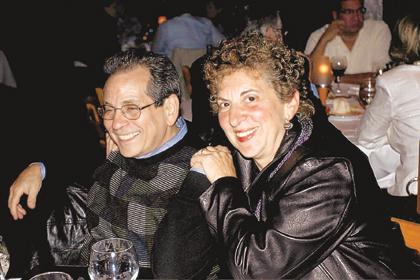

Reprinted from the Observer-Tribune and the Mt. Olive Chronicle.
WASHINGTON TWP. – William Reynolds of Long Valley and Ryan Shirtz of Mendham are teenagers who care and a Chester dentist wants the community to know about them.|  |
| Chester dentist David Goteiner and his wife, Carrie, have been honoring students in the area since 1985. |